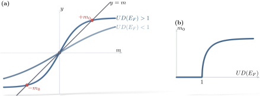

Advanced Quantum Materials 2027 · All lectures · Lecture notes
Session 6. Classical Magnetism and Magnons
6.6 The Stoner threshold as a criterion for magnetism
A natural question is whether any repulsive \(U>0\) gives magnetism, or if there is a threshold. We write the mean-field bands as \(E_\sigma(\mathbf{k}) = E(\mathbf{k}) - \sigma\, \tfrac{U}{2}m\) for \(\sigma=\pm1\), meaning spin up and down, where \(m\) is the self-consistent magnetization of (6.2). At zero temperature, the self-consistency condition is
\[m = \sum_{\mathbf k}\Big[n_F\big(E(\mathbf k)-\tfrac{U}{2}m\big) - n_F\big(E(\mathbf k)+\tfrac{U}{2}m\big)\Big].\]
If we expand the right-hand side for small \(m\) we obtain \(m \approx U\,m\,D(E_F)\), where \(D(E_F)\) is the density of states at the Fermi level. The trivial solution \(m=0\) always exists, but a nontrivial solution appears when the linear coefficient reaches one, which gives the condition
\[U\, D(E_F) \geq 1. \tag{6.3}\]
This condition is called the Stoner criterion. Below the threshold only \(m=0\) is stable, and the system stays nonmagnetic for any perturbation. Above the threshold the nonmagnetic solution becomes unstable, and a finite \(m\) appears spontaneously. This is the reason why some metals with a sizable Coulomb repulsion, such as aluminum or lead, stay nonmagnetic, since their density of states at the Fermi level is too small for the product in (6.3) to reach one. Iron and cobalt, on the other hand, have a large density of states from their narrow \(d\) bands together with a sizable effective \(U\), so they are clearly above the threshold. In the numerics we see what (6.3) predicts. The self-consistent magnetization of the chain stays at zero below a critical \(U\), and it grows continuously once \(U\) is above this threshold. Figure 6.1 shows both parts of this statement together. It shows why a nontrivial solution of the self-consistency condition only exists above the threshold, and how the resulting magnetization curve looks.

A flat band has a very large density of states at the Fermi level. According to the Stoner criterion (6.3), how large must \(U\) be for magnetism?
Show the answers
- A. ✗ False
This is false. Take a flat band of width \(W=0.1t\), with \(D(E_F)\approx10/t\). Then \(U=0.1t\) already gives \(UD(E_F)=1\), which is far below \(4t\).
- B. ✗ False
This is false. The criterion (6.3) has no condition on dispersion. When \(W\to0\) we get \(D(E_F)\to\infty\), so any \(U>0\) gives \(UD(E_F)>1\) and magnetism appears.
- C. ✓ True
This is true. The condition (6.3) is \(U D(E_F)\geq1\). When \(D(E_F)\) is large, a small \(U\) reaches the threshold, and this is why flat bands are good places to look for magnetism.
Notebook check-in: session6.ipynb, “(Exercise) Intermediate coupling regime and Stoner instability”
Reproduce the threshold behavior of (6.3) directly. Compute the self-consistent magnetization as a function of \(U\), and find the critical interaction at which \(m\) first becomes nonzero.
Notebook check-in: session6.ipynb, “(Exercise) Magnetism in flat bands”
In principle, a flat band has a divergent density of states at \(E_F\), so the Stoner product \(U D(E_F)\) in (6.3) is above the threshold for practically any \(U>0\). This exercise is not narrated in the transcript, but it is the natural numerical extension of Section 6.6, since a flat-band system is the case where it is easiest for magnetism to appear.
One important consequence ends this section and starts the next one. From (6.3), magnetism in general needs \(U D(E_F) \gtrsim 1\), and for a reasonable bandwidth this usually means that \(U\) has to be comparable to \(t\) or larger, and not smaller. However, mean-field theory itself is only reliable for \(U \ll t\), as we saw in Section 6.3. So the regime where magnetism appears is, in general, the same regime where the method that we have been using stops working. We need a different approach for \(U \gg t\), and we construct it in the rest of this session.
6.7 The strongly localized limit, where mean field breaks down
Let us look again at the half-filled chain of Section 6.4, but now we follow the magnetization per site as \(U\) grows from zero to very large values. At \(U=0\) there is no interaction and \(m=0\). When \(U\) increases, \(m\) grows, and for \(U\to\infty\) it saturates at exactly one Bohr magneton per site. This is a full localized spin-\(1/2\) moment on every site, and the moments point in alternating directions on the two sublattices, which is the “Ising-like” antiferromagnetic state to which the numerics converge.
This saturation tells us something physical, which is that in the large-\(U\) limit the electrons stop moving completely. If an electron hops onto a neighboring site that is already occupied, this costs an energy \(U\). When \(U\gg t\) this cost is too large, so each site keeps its one localized electron, and only its spin can still fluctuate. For this reason, in this limit perturbation theory should not be organized around the kinetic term, as mean field does implicitly, but around the localized state. We take the interacting and localized configuration as the ground state at zeroth order, and we treat the hopping as a small perturbation on top of it.